Squad Guillotine · 2026 season · previews, recaps and season stats · generated automatically
Squad Guillotine Weekly
A preview of the coming week goes up on Wednesday morning, once the waivers have run: each team's projection and chance of being chopped before and after them, the players picked up and the byes. After the games, the recap replays the week on its real kickoff times to show what the tracker's chance of being chopped said at every moment against who actually got chopped. The Season overview has the scoreboard and the waiver analysis, and Projection performance checks how well the projections held up. This page is generated by a script and has not been reviewed by a person. The write-ups are written by AI (Claude) from each week's numbers, or assembled by a script from those numbers when no AI draft has been added yet. A script checks every number in them against the week's numbers, but they can still contain mistakes.
One week at a time: who got chopped, what the tracker said along the way, and the figure for that week. The season-wide figures and the cross-check against the Simulations tab are under Season overview.
Week 4
Short version
Brissett fried Rice, managed by Mac, was chopped with 90.2 points, 5.3 behind Mkmoors, managed by McKenna, at 95.5. Congratulations to Mkmoors on surviving by the slimmest legal margin.
Monday night was pure whiplash. The tracker's top pick for the chop changed 7 times between Brissett fried Rice and Mkmoors before the final score settled it.
quin2312, managed by Quin, posted the week's top score and did it with the very players Mac could not afford. The waiver wire giveth. The waiver wire also taketh away Mac.
Top team score
quin2312 (Quin), 188.5
Top player score
Tetairoa McMillan, WR (CAR), 38.2 points
For quin2312 (Quin).
Biggest boom
Tyquan Thornton, WR (KC), 25.6 points
Projected for 0.0, for Sutton Death (Marissa).
Biggest bust
Parker Washington, WR (JAX), 1.5 points
A pregame starter projected for 14.6, for soj6 (Soj).
Biggest Waiver Spender
quin2312 (Quin), $210
On 2 of Sool's players: George Pickens $118 (scored 8.5, projected 12.1); Tetairoa McMillan $92 (scored 38.2, projected 13.3). Together they scored 46.7 against a projection of 25.4 this week.
Most expensive player
Justin Herbert, QB (LAC), $182
Claimed by Burden of Proof (Fish) from Sool's team. Scored 11.6 against a projection of 14.3 this week.
Waiver spending
$562 on Sool's players
11 of the 15 players freed by the chop were claimed, for an average of $51. The league spent $690 on waivers in all that week.
Best swap after waivers
Fish, +11.7 points
Sunday at 7:37am, after the waivers on the chopped team's players were processed: added Isaiah Williams, WR and dropped Adonai Mitchell, WR.
Every team: projected against finished
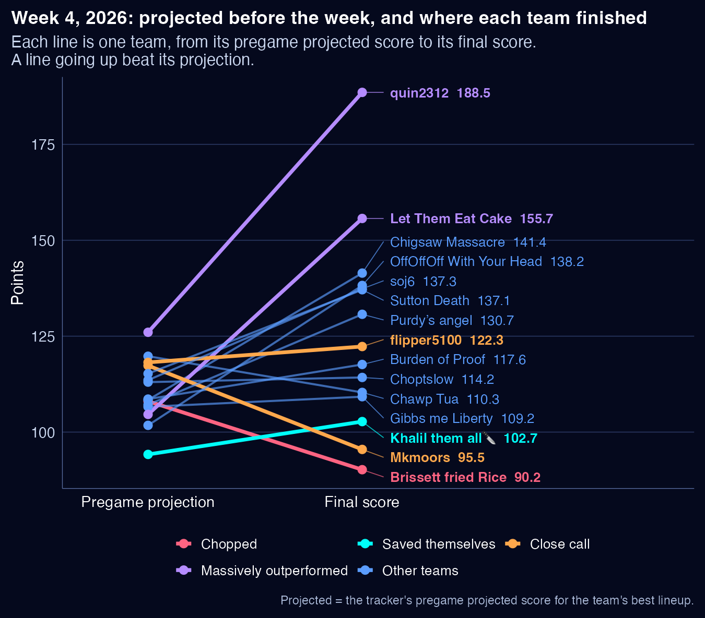
Week 4 at a glance. Each line is one team, from its pregame projected score (left) to its final score (right); a climbing line beat its projection. Red: the chopped team. Teal: saved itself (began the week in danger and was not chopped). Orange: a close call (chance of being chopped reached 25% or more during the week). Purple: massively outperformed its projection without being in danger. Blue: every other team. Definitions are under the headings below.
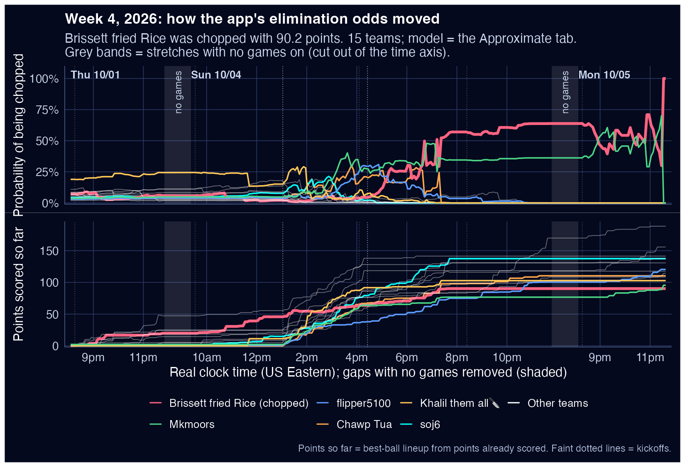
Week 4. Top: each team's chance of being chopped, which adds up to 100% at every moment. Bottom: points scored so far, as the best lineup you could build from the points already scored. Red is the chopped team; other colors reached at least a 20% chance at some point; all other teams are faint white lines. Time is the real clock, US Eastern, with the shaded stretches that had no games cut out. Teams do not start at an even 1-in-n split: each starts from its pregame projection, so a team projected low begins higher.
The team that got chopped
Before any game the tracker gave Brissett fried Rice a 7% chance of being chopped. An even split among the 15 teams would give each team 6.7%, or 1 in 15. Mac had every reason to feel safe and ignored all of it.
Mac's projected score began at 108.0 and slid to a low of 85.6 on Sunday at 6:42pm, a drop of 22.4 points. The chance of being chopped peaked at 64% at 11:42pm, before the last games. Then came Monday night. Mac's chance fell as low as 30% at 11:27pm and climbed as high as 71% at 10:52pm, and the tracker's top pick for the chop changed 7 times between Brissett fried Rice and Mkmoors. Brissett fried Rice was done at 90.2 with nobody left to play, so Mac spent the night doing the only thing left, which was hoping. The data has been reviewed, and hope is not a roster move.
The nine projected starters finished 24.9 points short of the projection. The wide receivers dug the hole, scoring 29.9 against 40.0, and the quarterbacks missed too, 27.0 against 34.1. The lone tight end scored 2.5 against 9.5, which is a number you expect from a kicker having a bad week. Three of the nine starters scored under half of what was projected. Two of those three barely played, so Mac started players who were barely on the field, and the third was on the field and still delivered little. A bold strategy: start people who do not play.
Mkmoors had 76.7 points and three receivers still to play. Devaughn Vele, WR was projected for 8.8 and scored 14.4. Drake London, WR was projected for 14.1 and scored 12.1. Olamide Zaccheaus, WR was projected for 2.6 and scored 0.0. Mkmoors finished with 95.5 and McKenna got to keep the team.
Then there is the waiver wire, where the real crime happened. Mac lost three waiver bids to Quin: Tetairoa McMillan, WR ($15 vs $92), Ollie Gordon, RB ($32 vs $87) and George Pickens, WR ($88 vs $118). McMillan alone would have added 32.0 points, and Gordon 14.8, enough on its own to survive. Mac still had $960 in the budget, so outbidding Quin was possible. A bid that small on a starting receiver is not a strategy, it is a tip. Mac kept the money, Quin kept the points, and the guillotine kept Mac.
The chopped team's biggest shortfalls against projection when its projected score bottomed out. Snaps are offensive snaps over the whole game, with the share of the team's snaps in brackets.
Player
Team
Projected
Scored by then
Final
Offensive snaps
Rashee Rice, WR
KC
11.6
0
0
6 (10%)
Bo Nix, QB
DEN
18.3
5.2
13.6
65 (100%)
Travis Kelce, TE
KC
9.5
2.5
2.5
50 (83%)
Kaytron Allen, RB
WAS
3.3
0.1
0.1
12 (19%)
Teams that saved themselves
A team that began the week in danger and was not chopped: the survivor with the highest chance of being chopped before any game, at least twice the even split (1 in the number of teams).
Khalil them all🔪, managed by Nicole, had a 19% chance of being chopped before any game, the highest of any team that survived, and then simply declined to be chopped. The team was projected for 94.2 and finished with 102.7, which is 8.5 points above that projection and 12.5 above the chopped team. Treylon Burks, WR was projected for 2.8 and scored 11.2. Rhamondre Stevenson, RB was projected for 11.4 and scored 16.9. Mike Gesicki, TE was projected for 6.6 and scored 11.5. Burks also started the week out of the pregame lineup and finished in the scoring lineup, and so did Khalil Shakir, WR, who was projected for 6.4 and scored 9.7. Survived, Nicole. Almost impressive.
Points are against the score projected for the team before any game. Teams are not chopped.
Team
Manager
Chance of being chopped before the week
Projected
Finished
Above projection
Above the chopped team
Khalil them all🔪
Nicole
19%
94.2
102.7
+8.5
12.5
Close calls
Teams with a lower chance before any game whose chance of being chopped climbed to at least 25% once games were on (and at least 5 points above where it started), and that were not chopped.
Mkmoors, managed by McKenna, had a 4% chance of being chopped before any game and then spent Monday night sweating through the sofa. The chance peaked at 70% on Monday at 11:27pm, when the team had 88.7 points scored. The team finished with 95.5, which is 5.3 points above the chopped team and 21.8 below the projection of 117.3. A miss that size and still alive. McKenna should light a candle for Devaughn Vele, WR, projected for 8.8, who scored 14.4 after that peak and was already in the scoring lineup.
flipper5100, managed by Tony, had a 3% chance before any game. The chance peaked at 31% on Sunday at 4:52pm, when the team had 39.2 points scored, which is an early wobble and not a Monday night panic, so it earns half marks at best. The team finished with 122.3, which is 32.1 points above the chopped team and 4.1 above the projection of 118.2. After that peak Chuba Hubbard, RB, projected for 14.6, scored 25.4. Deebo Samuel, WR, projected for 7.7, scored 15.5. Chris Olave, WR, projected for 15.9, scored 15.6 and was not in the scoring lineup at that point.
Points are against the score projected for the team before any game. Teams are not chopped.
Team
Manager
Chance of being chopped before the week
Highest chance
Points scored at that point
Projected
Finished
Above the chopped team
Mkmoors
McKenna
4%
70% (Mon 11:27pm)
88.7
117.3
95.5
5.3
flipper5100
Tony
3%
31% (Sun 4:52pm)
39.2
118.2
122.3
32.1
Teams that massively outperformed their projections
Teams that were not in danger and beat the score projected before the week by at least 25 points more than the typical team did that week.
Finally, something to celebrate. quin2312, managed by Quin, had a 2% chance of being chopped before any game. The team was projected for 126.0 and finished with 188.5, the highest score of the 15 teams, which is 62.5 points above that projection and 98.3 above the chopped team. The typical team finished 9.0 points above its projection this week, so Quin beat the projection by 53.5 points more. Tetairoa McMillan, WR was projected for 13.3 and scored 38.2. Nico Collins, WR was projected for 15.8 and scored 27.3. Ollie Gordon, RB was projected for 7.6 and scored 17.0. Yes, McMillan and Gordon are the two players Mac bid on. Chris Rodriguez, RB, projected for 5.1, scored 9.5 from the bench, and Xavier Worthy, WR, projected for 8.1, scored 9.0. Quin, take a bow. The waiver instincts are real.
Let Them Eat Cake, managed by Winslow, had an 8% chance before any game. The team was projected for 104.6 and finished with 155.7, the second highest score, which is 51.1 points above that projection and 65.5 above the chopped team. Winslow beat the projection by 42.1 points more than the typical team. Brian Robinson, RB was projected for 4.5 and scored 25.2 after starting on the bench, which is the loudest possible argument for best ball. CeeDee Lamb, WR was projected for 14.4 and scored 32.8. Alvin Kamara, RB was projected for 8.6 and scored 20.3. Marvin Harrison, WR also moved from the bench into the scoring lineup, projected for 4.6 and scoring 7.7.
Points are against the score projected for the team before any game. Teams are not chopped.
Team
Manager
Chance of being chopped before the week
Projected
Finished
Above projection
More than the typical team
Above the chopped team
quin2312
Quin
2%
126.0
188.5
+62.5
+53.5
98.3
Let Them Eat Cake
Winslow
8%
104.6
155.7
+51.1
+42.1
65.5
Compared with earlier weeks
When the last games kicked off, the chopped team had a 64% chance of being chopped this week, against 47% in week 1, 2% in week 2 and 88% in week 3. The gap to the next lowest team was 5.3 points, against 1.8 in week 1, 0.04 in week 2 and 17.4 in week 3.
Waiver results
Eleven of the players freed by the week 3 chop were claimed, for $562 in all. Burden of Proof, managed by Fish, paid $182 for Justin Herbert, QB, with the runner-up bid at $103, and got 11.6 points against a projection of 14.3. That is $79 over the next best bid for a quarterback who missed his projection. Thank you, Fish, for the generous donation.
Two bids were close, and two managers have feelings about it. Fish and Marissa's Sutton Death both bid $27 for AJ Barner, TE, and Fish won the tie, so Marissa goes home with a participation sticker. Nicole paid $10 for Jadarian Price, RB, and Winslow bid $5 and missed out. Better luck next week, Winslow. Will it pay off? Follow along in the season overview.
Waiver claims on the players freed by the week 3 chop, 11 of them claimed. Price is what the winner paid. Bids counts the claims on that player in the same waiver run. Runner-up bid is the highest losing bid, and overpay is the price minus the runner-up bid, the money that was not needed to win. Scored and projected are the player's points this week.
Player
Claimed by
Price
Bids
Runner-up bid
Overpay
Scored
Projected
Justin Herbert, QB (LAC)
Burden of Proof(Fish)
$182
4
$103
$79
11.6
14.3
George Pickens, WR (DAL)
quin2312(Quin)
$118
10
$96
$22
8.5
12.1
Tetairoa McMillan, WR (CAR)
quin2312(Quin)
$92
10
$67
$25
38.2
13.3
Jake Ferguson, TE (DAL)
Sutton Death(Marissa)
$37
4
$27
$10
2.6
7.2
Carnell Tate, WR (TEN)
OffOffOff With Your Head(Whaley)
$36
5
$29
$7
17.0
7.8
Kyle Monangai, RB (CHI)
Gibbs me Liberty(Russ)
$32
4
$18
$14
27.5
7.7
AJ Barner, TE (SEA)
Burden of Proof(Fish)
$27
4
$27
$0
1.7
7.7
De'Von Achane, RB (MIA)
Khalil them all🔪(Nicole)
$25
1
-
-
0.0
-
Jadarian Price, RB (SEA)
Khalil them all🔪(Nicole)
$10
3
$5
$5
0.0
-
Xavier Hutchinson, WR (HOU)
Khalil them all🔪(Nicole)
$3
1
-
-
6.1
4.7
Chris Bell, WR (MIA)
Choptslow(Alex)
$0
2
$0
$0
0.0
5.1
Week 3
Short version
RobesPierreGarçon, managed by Sool, was chopped with 71.9 points, 17.4 behind Let Them Eat Cake, managed by Winslow, at 89.3.
It did not have to happen. One Sunday-morning roster swap by Sool decided the week, and without it Let Them Eat Cake would have been the team chopped.
Before any game the tracker's favorite for the chop was quin2312, managed by Quin, at an 11% chance of being chopped. RobesPierreGarçon started at the same 11% and ended up the tracker's top pick for 98% of game time.
Top team score
Chigsaw Massacre (Ice), 156.6
Top player score
Jahmyr Gibbs, RB (DET), 37.9 points
For Gibbs me Liberty (Russ).
Biggest boom
Jahmyr Gibbs, RB (DET), 37.9 points
Projected for 21.4, for Gibbs me Liberty (Russ).
Biggest bust
Drake Maye, QB (NE), 5.8 points
A pregame starter projected for 18.6, for Burden of Proof (Fish).
Biggest Waiver Spender
soj6 (Soj), $268
On 1 of Dave's players: Joe Burrow $268 (scored 22.6, projected 17.5).
Waiver spending
$905 on Dave's players
10 of the 15 players freed by the chop were claimed, for an average of $90. The league spent $1,058 on waivers in all that week.
Best swap after waivers
Soj, +20.8 points
Saturday at 3:01am, after the waivers on the chopped team's players were processed: added Sam Darnold, QB and dropped Gunnar Helm, TE, for $33.
Worst swap after waivers
Sool, -17.5 points
Sunday at 6:54am, after the waivers on the chopped team's players were processed: added Travis Homer, RB and dropped Case Keenum, QB.
Every team: projected against finished
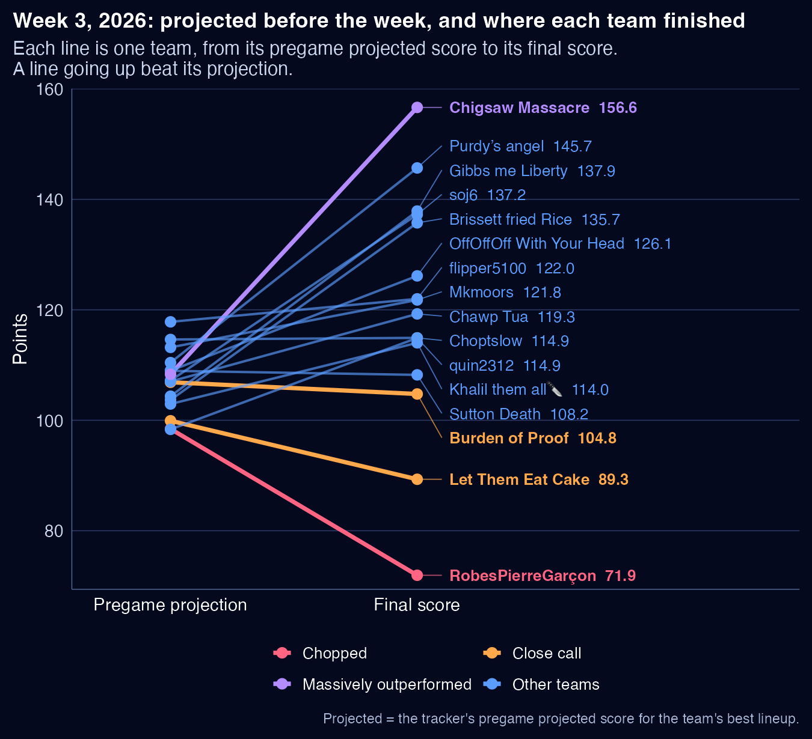
Week 3 at a glance. Each line is one team, from its pregame projected score (left) to its final score (right); a climbing line beat its projection. Red: the chopped team. Teal: saved itself (began the week in danger and was not chopped). Orange: a close call (chance of being chopped reached 25% or more during the week). Purple: massively outperformed its projection without being in danger. Blue: every other team. Definitions are under the headings below.
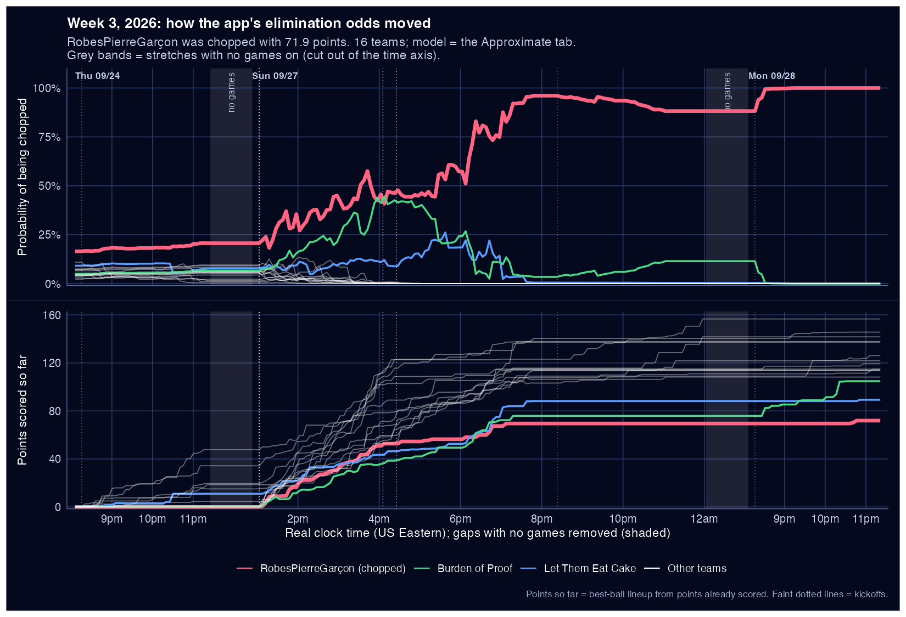
Week 3. Top: each team's chance of being chopped, which adds up to 100% at every moment. Bottom: points scored so far, as the best lineup you could build from the points already scored. Red is the chopped team; other colors reached at least a 20% chance at some point; all other teams are faint white lines. Time is the real clock, US Eastern, with the shaded stretches that had no games cut out. Teams do not start at an even 1-in-n split: each starts from its pregame projection, so a team projected low begins higher.
The team that got chopped
Before any game the tracker gave RobesPierreGarçon an 11% chance of being chopped. An even split would give each of the 16 teams 6.3%, or 1 in 16. A perfectly ordinary start to the week.
Sool's projected score began at 98.4 and went looking for trouble. By Sunday at 6:22pm it had sunk to 69.1, a drop of 29.3 points, and the chance of being chopped peaked at 96% at 7:47pm. Where did it go wrong? Everywhere. The nine projected starters finished 48.2 points short of the projection. The running backs were the crater, scoring 5.5 against 31.1. The quarterbacks managed 13.7 against 28.6 and the wide receivers 23.2 against 31.4. Five of the nine starters scored under half of what was projected. Two of those five barely played, and the other three were on the field and still delivered nothing. Jadarian Price, RB and Jake Ferguson, TE both lost fumbles on the way down. The lone tight end was the one bright spot, 7.8 against 7.3.
When the last games kicked off the chance of being chopped was still 88%. RobesPierreGarçon had 69.5 points and Kyle Monangai, RB still to play, projected for 7.2. Monangai scored 3.1, and the final score was 71.9, a number that will not be framed and hung on any wall. Fish's Burden of Proof, for contrast, had 75.9 points and two players left. Luther Burden, WR was projected for 8.4 and scored 16.3. Kalif Raymond, WR was projected for 5.7 and scored 18.0. Burden of Proof finished with 104.8.
Now for the part Sool would like to skip. On Friday at 2:11am Sool made a good move, adding Xavier Hutchinson, WR, who scored 7.0, and dropping Chimere Dike, WR, who scored -1.2. In the scoring lineup, Tetairoa McMillan, WR, who scored 2.7, was replaced by Hutchinson, and the swap raised the final score by 4.3. Then came Sunday at 6:54am, before most of the country had finished its coffee. Sool added Travis Homer, RB, who scored 0.0, and dropped Case Keenum, QB, who scored 24.5. Out the door went the quarterback, and in came nothing. Keenum's spot in the scoring lineup went to Hutchinson, who scored 7.0, and the swap lowered the final score by 17.5. No other team picked up Keenum, so there is nobody else to blame. Had Sool skipped only the Sunday swap and kept the Friday one, the final score would have been 89.4 instead of 71.9. That leaves Let Them Eat Cake's 89.3 as the lowest score in the league, so Winslow's team would have been chopped instead. Sool did not lose this week. Sool gave it away, and handed Winslow a thank-you card on the way out.
The waiver wire offered a way out too. Sool lost two waiver bids: Harold Fannin, TE ($27 vs Whaley's $31) and Michael Penix, QB ($14 vs Tony's $41). Neither claim would have saved the team alone, but winning both would have added 20.8 points, enough to finish above Let Them Eat Cake. Sool still had $928 in the budget, so bigger bids were possible. Instead Sool kept the money and lost the week.
The chopped team's biggest shortfalls against projection when its projected score bottomed out. Snaps are offensive snaps over the whole game, with the share of the team's snaps in brackets.
Player
Team
Projected
Scored by then
Final
Offensive snaps
De'Von Achane, RB
MIA
14.4
1.7
1.7
4 (5%)
Tetairoa McMillan, WR
CAR
11.9
2.7
2.7
73 (95%)
Jadarian Price, RB
SEA
9.5
0.7
0.7
19 (28%)
Jake Ferguson, TE
DAL
7.3
-0.6
7.8
51 (69%)
Close calls
Teams with a lower chance before any game whose chance of being chopped climbed to at least 25% once games were on (and at least 5 points above where it started), and that were not chopped.
Burden of Proof, managed by Fish, had a 5% chance of being chopped before any game. The chance peaked at 45% on Sunday at 4:07pm, when the team had 36.6 points scored. The team finished with 104.8, which is 32.8 points above the chopped team and 2.1 below the projection of 106.9. After that peak Michael Wilson, WR, projected for 10.0, scored 20.4, and Kalif Raymond, WR, projected for 5.7, scored 18.0. Neither was in the scoring lineup at that point. Jeremiyah Love, RB, projected for 12.8, scored 19.4 and was already in the lineup.
Let Them Eat Cake, managed by Winslow, had a 10% chance before any game. The chance peaked at 26% on Sunday at 5:37pm, when the team had 50.4 points scored. The team finished with 89.3, which is 17.4 points above the chopped team and 10.6 below the projection of 99.9. After that peak Dak Prescott, QB, projected for 19.0, scored 18.9. CeeDee Lamb, WR, projected for 14.4, scored 16.7. Rome Odunze, WR, projected for 7.4, scored 5.9. None of those three players was in the scoring lineup at that point. Winslow barely survived the week and owes Sool one.
Points are against the score projected for the team before any game. Teams are not chopped.
Team
Manager
Chance of being chopped before the week
Highest chance
Points scored at that point
Projected
Finished
Above the chopped team
Burden of Proof
Fish
5%
45% (Sun 4:07pm)
36.6
106.9
104.8
32.8
Let Them Eat Cake
Winslow
10%
26% (Sun 5:37pm)
50.4
99.9
89.3
17.4
Teams that massively outperformed their projections
Teams that were not in danger and beat the score projected before the week by at least 25 points more than the typical team did that week.
Chigsaw Massacre, managed by Ice, had a 6% chance of being chopped before any game and then simply left everyone else behind. The team was projected for 108.3 and finished with 156.6, which is 48.3 points above that projection and the highest score of the 16 teams. The typical team finished 11.7 points above its projection, so Ice's team beat the projection by 36.6 points more. Jaxon Smith-Njigba, WR was projected for 18.6 and scored 30.4. Aaron Rodgers, QB was projected for 14.3 and scored 23.7. Wan'Dale Robinson, WR, projected for 7.0, and Keaton Mitchell, RB, projected for 6.1, started on the bench and finished in the scoring lineup with 15.2 and 12.2.
Points are against the score projected for the team before any game. Teams are not chopped.
Team
Manager
Chance of being chopped before the week
Projected
Finished
Above projection
More than the typical team
Above the chopped team
Chigsaw Massacre
Ice
6%
108.3
156.6
+48.3
+36.6
84.7
Compared with earlier weeks
When the last games kicked off, the chopped team had an 88% chance of being chopped, against 47% in week 1 and 2% in week 2. The gap to the next lowest team was 17.4 points, against 1.8 in week 1 and 0.04 in week 2. Week 3 was the clearest chop of the three.
Waiver results
Ten of the players freed by the week 2 chop were claimed, for $905 in all. Khalil them all🔪, managed by Nicole, paid $80 for Mark Andrews, TE, with the runner-up bid at $22, and got 3.9 points against a projection of 9.6. Choptslow, managed by Alex, paid $207 for Tyler Shough, QB, against a runner-up bid of $123, and got 24.8 points against a projection of 18.4. Alex overpaid, and Shough made it look like a bargain anyway.
Alex was also the one who came up short, twice. Alex bid $51 for Jameson Williams, WR, and lost to Reese's $52. Alex bid $44 for Quinshon Judkins, RB, and lost to Marissa's $48. Ice bid $27 for Harold Fannin, TE, and lost to Whaley's $31. A dollar here and a few there. Will it pay off? Follow along in the season overview.
Waiver claims on the players freed by the week 2 chop, 10 of them claimed. Price is what the winner paid. Bids counts the claims on that player in the same waiver run. Runner-up bid is the highest losing bid, and overpay is the price minus the runner-up bid, the money that was not needed to win. Scored and projected are the player's points this week.
Player
Claimed by
Price
Bids
Runner-up bid
Overpay
Scored
Projected
Joe Burrow, QB (CIN)
soj6(Soj)
$268
11
$222
$46
22.6
17.5
Tyler Shough, QB (NO)
Choptslow(Alex)
$207
9
$123
$84
24.8
18.4
Justin Jefferson, WR (MIN)
Chigsaw Massacre(Ice)
$194
10
$187
$7
4.2
13.8
Mark Andrews, TE (BAL)
Khalil them all🔪(Nicole)
$80
7
$22
$58
3.9
9.6
Jameson Williams, WR (DET)
Chawp Tua(Reese)
$52
8
$51
$1
6.9
10.9
Quinshon Judkins, RB (CLE)
Sutton Death(Marissa)
$48
9
$44
$4
8.9
11.3
Harold Fannin, TE (CLE)
OffOffOff With Your Head(Whaley)
$31
8
$27
$4
20.6
7.6
Brian Thomas, WR (JAX)
Choptslow(Alex)
$17
7
$13
$4
1.3
7.5
Woody Marks, RB (HOU)
OffOffOff With Your Head(Whaley)
$8
3
$5
$3
8.6
7.1
Mack Hollins, WR (NE)
quin2312(Quin)
$0
4
$0
$0
11.7
6.8
Week 2
Short version
Mark Andrews aka top 8 TE, managed by Dave, was chopped with 87.7 points. Burden of Proof, managed by Fish, finished 0.04 points ahead.
The tracker's pregame favorite for the chop was Chawp Tua, managed by Reese, at a 13% chance of being chopped. Dave's team started at just 6%.
When the last games kicked off, Mark Andrews aka top 8 TE had a 2% chance of being chopped and Burden of Proof had 92%. A long shot that happened.
Top team score
Let Them Eat Cake (Winslow), 128.8
Top player score
Josh Allen, QB (BUF), 40.8 points
For Chawp Tua (Reese).
Biggest boom
Davante Adams, WR (LA), 35.5 points
Projected for 11.3, for Mkmoors (McKenna).
Biggest bust
Jaxson Dart, QB (NYG), 0.8 points
A pregame starter projected for 18.4, for flipper5100 (Tony).
Biggest Waiver Spender
Choptslow (Alex), $592
On 3 of Maddie's players: Amon-Ra St. Brown $387 (scored 30.7, projected 14.2); Colston Loveland $168 (scored 0.8, projected 9.7); RJ Harvey $37 (scored 0.0, projected 0.0). Together they scored 31.5 against a projection of 24.0 this week.
Most expensive player
Ashton Jeanty, RB (LV), $578
Claimed by Purdy’s angel (Priya) from Maddie's team. Scored 8.3 against a projection of 14.1 this week.
Waiver spending
$1,273 on Maddie's players
8 of the 15 players freed by the chop were claimed, for an average of $159. The league spent $1,405 on waivers in all that week.
Best swap after waivers
Nicole, +7.7 points
Friday at 6:53am, after the waivers on the chopped team's players were processed: added Tank Bigsby, RB and dropped Dylan Sampson, RB.
Worst swap after waivers
Tony, -1.7 points
Friday at 2:21am, after the waivers on the chopped team's players were processed: added Josh Jacobs, RB and dropped Germie Bernard, WR, for $0.
Every team: projected against finished
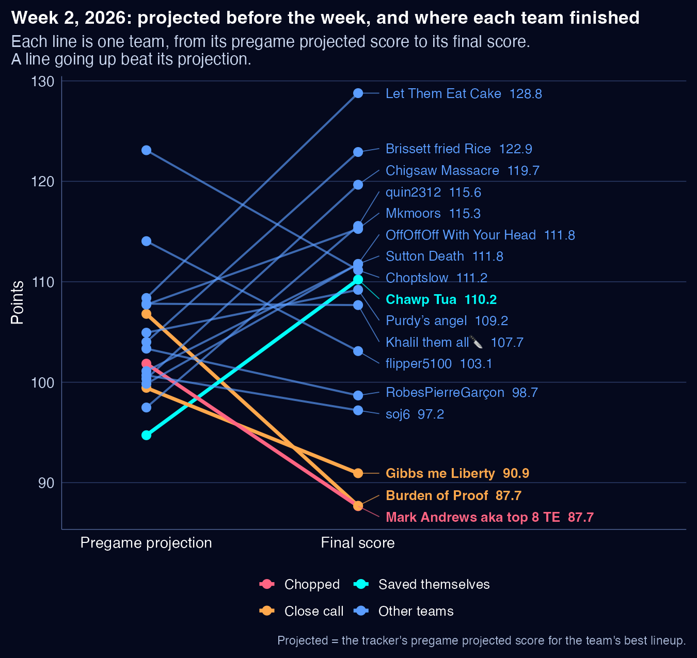
Week 2 at a glance. Each line is one team, from its pregame projected score (left) to its final score (right); a climbing line beat its projection. Red: the chopped team. Teal: saved itself (began the week in danger and was not chopped). Orange: a close call (chance of being chopped reached 25% or more during the week). Purple: massively outperformed its projection without being in danger. Blue: every other team. Definitions are under the headings below.
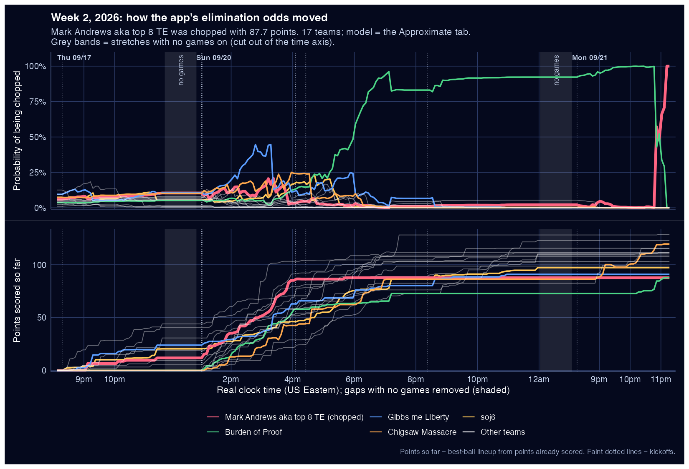
Week 2. Top: each team's chance of being chopped, which adds up to 100% at every moment. Bottom: points scored so far, as the best lineup you could build from the points already scored. Red is the chopped team; other colors reached at least a 20% chance at some point; all other teams are faint white lines. Time is the real clock, US Eastern, with the shaded stretches that had no games cut out. Teams do not start at an even 1-in-n split: each starts from its pregame projection, so a team projected low begins higher.
The team that got chopped
Before any game the tracker gave Mark Andrews aka top 8 TE a 6% chance of being chopped. An even split would give each of the 17 teams 5.9%, or 1 in 17. Dave had nothing to worry about.
Dave's projected score fell from 101.8 before the week to a low of 79.9 on Sunday at 3:12pm, a drop of 22.0 points. The chance of being chopped peaked at 21% at 3:22pm, then faded to 2% by the time the last games kicked off. The nine projected starters finished 20.9 points short of the projection. The wide receivers were the biggest hole, scoring 11.3 against 25.5, and the running backs fell short too, 15.3 against 26.7. The quarterbacks beat the projection, 38.6 against 33.3, which only made the rest look worse. Three of the nine starters scored under half of what was projected, and only one of those three barely played.
By the time the last games kicked off, Dave's team was done at 87.7 with nobody left to play, and Dave could have been forgiven for relaxing. Big mistake. Fish's Burden of Proof had 72.7 points and three players left. Blake Corum, RB was projected for 9.8 and scored 9.7. Terrance Ferguson, TE was projected for 4.3 and scored 14.4. Darnell Mooney, WR was projected for 3.4 and scored 5.8. Monday night kept changing its mind. Dave's chance of being chopped dropped as low as 0% at 10:11pm and then rose to 71% at 11:06pm, with the top pick for the chop changing 3 times between Burden of Proof and Mark Andrews aka top 8 TE. Burden of Proof finished 0.04 points ahead, four hundredths of a point and the thinnest margin short of a tie.
The waiver wire held a way out. Dave lost two waiver bids: Amon-Ra St. Brown, WR ($139 vs Alex's $387) and Ashton Jeanty, RB ($138 vs Priya's $578). St. Brown alone would have added 25.2 points, and Jeanty 2.3, each enough on its own to survive. Dave still had $1000 in the budget, so outbidding either winner was possible. Dave kept the money and lost the week.
The chopped team's biggest shortfalls against projection when its projected score bottomed out. Snaps are offensive snaps over the whole game, with the share of the team's snaps in brackets.
Player
Team
Projected
Scored by then
Final
Offensive snaps
Jameson Williams, WR
DET
10.7
4.3
4.3
63 (97%)
Quinshon Judkins, RB
CLE
11.5
3.3
7.3
39 (67%)
Tyler Shough, QB
NO
15.5
8.2
22.4
68 (100%)
Justin Jefferson, WR
MIN
14.7
7
7
52 (100%)
Teams that saved themselves
A team that began the week in danger and was not chopped: the survivor with the highest chance of being chopped before any game, at least twice the even split (1 in the number of teams).
Chawp Tua, managed by Reese, had a 13% chance of being chopped before any game, the highest of any team that survived. The team was projected for 94.7 and finished with 110.2, which is 15.5 points above that projection and 22.6 above the chopped team. Josh Allen, QB was projected for 22.0 and scored 40.8. Kenneth Walker, RB was projected for 15.3 and scored 20.8. TreVeyon Henderson, RB was projected for 8.4 and scored 13.6. Kaleb Johnson, RB started on the bench, projected for 1.6, and finished in the scoring lineup with 3.2.
Points are against the score projected for the team before any game. Teams are not chopped.
Team
Manager
Chance of being chopped before the week
Projected
Finished
Above projection
Above the chopped team
Chawp Tua
Reese
13%
94.7
110.2
+15.5
22.6
Close calls
Teams with a lower chance before any game whose chance of being chopped climbed to at least 25% once games were on (and at least 5 points above where it started), and that were not chopped.
Burden of Proof, managed by Fish, had a 4% chance of being chopped before any game and then took everyone on a ride. The chance peaked at 100% on Monday at 10:11pm, when the team had 72.7 points scored. Then Fish's team found just enough. It finished with 87.7, which is 0.04 points above the chopped team and 19.1 below the projection of 106.8. After that peak Terrance Ferguson, TE, projected for 4.3, scored 14.4, and Blake Corum, RB, projected for 9.8, scored 9.7. Neither was in the scoring lineup at that point.
Gibbs me Liberty, managed by Russ, had a 10% chance before any game. The chance peaked at 45% on Sunday at 2:47pm, when the team had 32.3 points scored. The team finished with 90.9, which is 3.3 points above the chopped team. After that peak Deshaun Watson, QB, projected for 13.9, scored 19.7. Garrett Wilson, WR, projected for 12.3, scored 14.2. Tyler Warren, TE, projected for 9.1, scored 11.4. All three were already in the scoring lineup, so Russ can say the plan worked.
Points are against the score projected for the team before any game. Teams are not chopped.
Team
Manager
Chance of being chopped before the week
Highest chance
Points scored at that point
Projected
Finished
Above the chopped team
Burden of Proof
Fish
4%
100% (Mon 10:11pm)
72.7
106.8
87.7
0.04
Gibbs me Liberty
Russ
10%
45% (Sun 2:47pm)
32.3
99.4
90.9
3.3
Compared with earlier weeks
When the last games kicked off, the chopped team had a 2% chance of being chopped, against 47% in week 1. The gap to the next lowest team was 0.04 points, against 1.8 in week 1. Week 1 was close. Week 2 was a rounding error.
Waiver results
Eight of the players freed by the week 1 chop were claimed, for $1,273 in all. Purdy’s angel, managed by Priya, paid $578 for Ashton Jeanty, RB, with the runner-up bid at $262, and got 8.3 points against a projection of 14.1. Choptslow, managed by Alex, paid $168 for Colston Loveland, TE, when the runner-up bid was $51, and got 0.8 points against a projection of 9.7. Both managers left a lot of money on the table and neither got it back this week.
Reese was the one who came up short. Reese tied Mac's bid of $20 for Terry McLaurin, WR, and lost the tie. Reese then bid $15 for Michael Pittman, WR, and missed out on a $20 winner. Mac took both players and Reese went home empty-handed. Will it pay off? Follow along in the season overview.
Waiver claims on the players freed by the week 1 chop, 8 of them claimed. Price is what the winner paid. Bids counts the claims on that player in the same waiver run. Runner-up bid is the highest losing bid, and overpay is the price minus the runner-up bid, the money that was not needed to win. Scored and projected are the player's points this week.
Player
Claimed by
Price
Bids
Runner-up bid
Overpay
Scored
Projected
Ashton Jeanty, RB (LV)
Purdy’s angel(Priya)
$578
11
$262
$316
8.3
14.1
Amon-Ra St. Brown, WR (DET)
Choptslow(Alex)
$387
10
$311
$76
30.7
14.2
Colston Loveland, TE (CHI)
Choptslow(Alex)
$168
7
$51
$117
0.8
9.7
Kyle Pitts, TE (ATL)
soj6(Soj)
$60
7
$43
$17
2.0
7.0
RJ Harvey, RB (DEN)
Choptslow(Alex)
$37
6
$29
$8
0.0
-
Michael Pittman, WR (PIT)
Brissett fried Rice(Mac)
$20
3
$15
$5
0.0
-
Terry McLaurin, WR (WAS)
Brissett fried Rice(Mac)
$20
5
$20
$0
6.0
11.6
Rashid Shaheed, WR (SEA)
Sutton Death(Marissa)
$3
1
-
-
5.4
6.4
Week 1
Short version
Chop it like it’s hot, managed by Maddie, got the guillotine with 70.6 points, 1.8 behind RobesPierreGarçon, managed by Sool, at 72.5.
The tracker's pregame favorite for the chop was Chawp Tua, managed by Reese, at a 27% chance of being chopped. Maddie's team started at 7% and still ended up as the tracker's top pick for 79% of game time.
Monday night settled it. When the last games kicked off, Chop it like it’s hot had a 47% chance of being chopped and RobesPierreGarçon had 53%.
Top team score
flipper5100 (Tony), 172.3
Top player score
Caleb Williams, QB (CHI), 37.3 points
For Choptslow (Alex).
Biggest boom
Kenneth Walker, RB (KC), 32.6 points
Projected for 12.2, for Chawp Tua (Reese).
Biggest bust
Kyler Murray, QB (MIN), 0.6 points
A pregame starter projected for 18.0, for Gibbs me Liberty (Russ).
Best swap after waivers
Soj, +4.2 points
Thursday at 3:37pm, during the games: added Cooper Rush, QB and dropped Tyquan Thornton, WR.
Every team: projected against finished
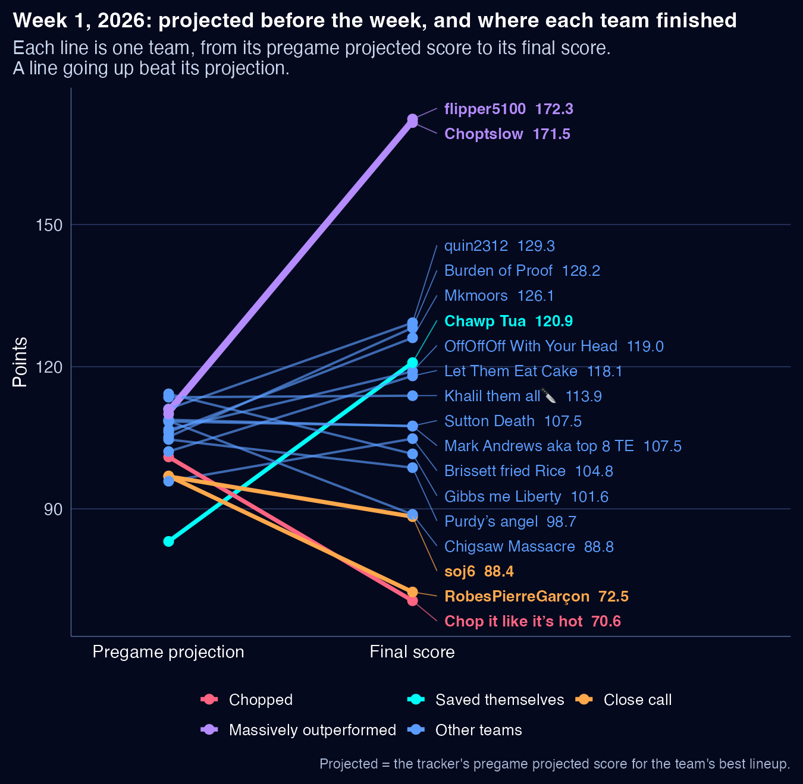
Week 1 at a glance. Each line is one team, from its pregame projected score (left) to its final score (right); a climbing line beat its projection. Red: the chopped team. Teal: saved itself (began the week in danger and was not chopped). Orange: a close call (chance of being chopped reached 25% or more during the week). Purple: massively outperformed its projection without being in danger. Blue: every other team. Definitions are under the headings below.
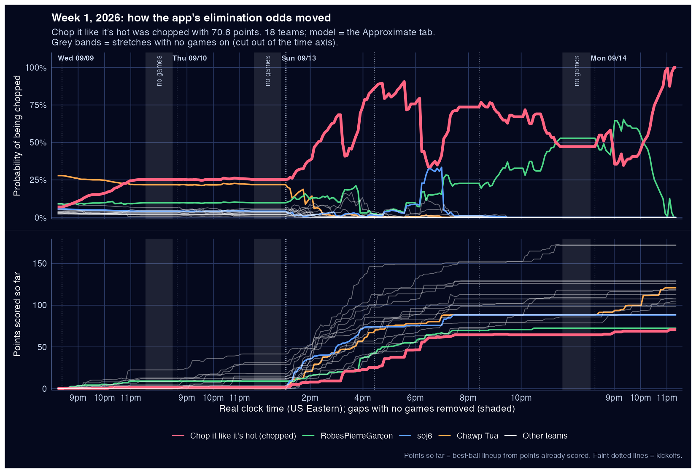
Week 1. Top: each team's chance of being chopped, which adds up to 100% at every moment. Bottom: points scored so far, as the best lineup you could build from the points already scored. Red is the chopped team; other colors reached at least a 20% chance at some point; all other teams are faint white lines. Time is the real clock, US Eastern, with the shaded stretches that had no games cut out. Teams do not start at an even 1-in-n split: each starts from its pregame projection, so a team projected low begins higher.
The team that got chopped
Before any game the tracker gave Chop it like it’s hot a 7% chance of being chopped. An even split would give each of the 18 teams 5.6%, or 1 in 18. On paper, Maddie's week looked fine.
Then came Sunday. Maddie's projected score started at 101.0 and bottomed out at 61.7 at 4:43pm, a drop of 39.3 points. The chance of being chopped peaked at 91% at 5:33pm, with the last games still to come. The nine projected starters finished 30.3 points short of the projection. Quarterback scored 0.5 against a projection of 17.1, and tight end scored 0.0 against 18.9. The running backs did the job, 35.8 against 22.6, and nobody else did. Five of the nine starters scored under half of what was projected, and four of those five scored under 1 point. Only one of the five barely played, so the rest were on the field and still delivered nothing. Tyrone Tracy, RB lost a fumble from the bench, just to be thorough.
Monday night had one last twist. RobesPierreGarçon was done at 72.5 with no players left. Maddie's team had 64.5 points and RJ Harvey, RB still to play, projected for 8.2. Harvey scored 6.1, the team finished at 70.6, and that was the week. The tracker could not decide either. Maddie's chance of being chopped dipped to 35% at 9:21pm, then climbed to 99% at 11:01pm, and the top pick for the chop changed 3 times between RobesPierreGarçon and Chop it like it’s hot. A roller coaster with one destination.
Here is the part the league should appreciate. Maddie built this app, and wrote the recap you are reading, for everyone in the league. Maddie put in all the effort and got none of the rewards, only the guillotine. And the real injustice is that Sool should have gone home. RobesPierreGarçon finished just ahead, and the whole league was rooting for Sool to take the walk instead. The builder builds the scaffold, then climbs it.
The chopped team's biggest shortfalls against projection when its projected score bottomed out. Snaps are offensive snaps over the whole game, with the share of the team's snaps in brackets.
Player
Team
Projected
Scored by then
Final
Offensive snaps
Sam Darnold, QB
SEA
17.1
0.5
0.5
5 (10%)
Colston Loveland, TE
CHI
11.2
0
0
65 (87%)
Kyle Pitts, TE
ATL
7.7
0
0
38 (63%)
Rashid Shaheed, WR
SEA
7.6
0.9
0.9
33 (66%)
Teams that saved themselves
A team that began the week in danger and was not chopped: the survivor with the highest chance of being chopped before any game, at least twice the even split (1 in the number of teams).
Chawp Tua, managed by Reese, was supposed to be the week's victim, with a 27% chance of being chopped before any game, the highest of any team that survived. The team was projected for 83.1 and finished with 120.9, which is 37.8 points above that projection and 50.2 above the chopped team. Kenneth Walker, RB was projected for 12.2 and scored 32.6. Josh Allen, QB was projected for 19.4 and scored 35.7. Trey McBride, TE was projected for 11.0 and scored 20.0. Kenyon Sadiq, TE started on the bench, projected for 3.5, and finished in the scoring lineup with 9.9. Reese owes all four a thank-you note.
Points are against the score projected for the team before any game. Teams are not chopped.
Team
Manager
Chance of being chopped before the week
Projected
Finished
Above projection
Above the chopped team
Chawp Tua
Reese
27%
83.1
120.9
+37.8
50.2
Close calls
Teams with a lower chance before any game whose chance of being chopped climbed to at least 25% once games were on (and at least 5 points above where it started), and that were not chopped.
RobesPierreGarçon, managed by Sool, had a 9% chance of being chopped before any game. The chance peaked at 65% on Monday at 9:21pm, when the team had 72.5 points scored and nothing left to play. That was the final score, 1.8 points above the chopped team and 24.4 below the projection of 96.9. Ugly, but alive.
soj6, managed by Soj, also had a 9% chance before any game. The chance peaked at 33% on Sunday at 6:58pm, when the team had 75.8 points scored. The team finished with 88.4, which is 17.7 points above the chopped team and 8.4 below the projection of 96.8. After that peak Stefon Diggs, WR, projected for 8.0, scored 13.5 and was already in the scoring lineup. Malik Washington, WR, projected for 6.5, scored 4.8, and Tre' Harris, WR, projected for 4.7, scored 3.5. Neither was in the scoring lineup at that point.
Points are against the score projected for the team before any game. Teams are not chopped.
Team
Manager
Chance of being chopped before the week
Highest chance
Points scored at that point
Projected
Finished
Above the chopped team
RobesPierreGarçon
Sool
9%
65% (Mon 9:21pm)
72.5
96.9
72.5
1.8
soj6
Soj
9%
33% (Sun 6:58pm)
75.8
96.8
88.4
17.7
Teams that massively outperformed their projections
Teams that were not in danger and beat the score projected before the week by at least 25 points more than the typical team did that week.
Choptslow, managed by Alex, had a 2% chance of being chopped before any game and then spent the week making the rest of the league look bad. The team was projected for 110.0 and finished with 171.5, which is 61.5 points above that projection. The typical team finished 4.7 points above its projection, so Alex's team beat the projection by 56.8 points more. D'Andre Swift, RB was projected for 12.3 and scored 31.9. Caleb Williams, QB was projected for 18.3 and scored 37.3. DJ Moore, WR was projected for 9.0 and scored 18.5. Pat Freiermuth, TE, projected for 5.6, and Caleb Douglas, WR, projected for 4.3, started on the bench and finished in the scoring lineup with 13.1 and 11.9.
flipper5100, managed by Tony, did even better and posted the highest score of the 18 teams, 172.3. The team was projected for 111.0, which puts it 61.3 points above that projection and 56.6 points more than the typical team's 4.7. David Montgomery, RB was projected for 14.1 and scored 27.4. Chuba Hubbard, RB was projected for 10.0 and scored 22.2. Chris Olave, WR was projected for 13.1 and scored 23.2.
Points are against the score projected for the team before any game. Teams are not chopped.
Team
Manager
Chance of being chopped before the week
Projected
Finished
Above projection
More than the typical team
Above the chopped team
Choptslow
Alex
2%
110.0
171.5
+61.5
+56.8
100.9
flipper5100
Tony
2%
111.0
172.3
+61.3
+56.6
101.6
Week 5 preview
Written Wednesday morning, after the waivers ran and before any game. It shows each team's projection and chance of being chopped before the waivers and after them, using today's projections both times, so any change comes from the waiver moves alone.
Short version
flipper5100, managed by Tony, is the favorite for the guillotine after the waivers, with a 16% chance of being chopped. Khalil them all🔪, managed by Nicole, is right behind at 15%, and Nicole came away from the waivers with nothing.
Sutton Death, managed by Marissa, wins the week. Two quarterback claims cut the chance of being chopped from 20% to 2.8%.
soj6, managed by Soj, paid $283 for Jonathan Taylor, RB, and 12 teams bid on him. Congratulations to the winner. Condolences to the wallet.
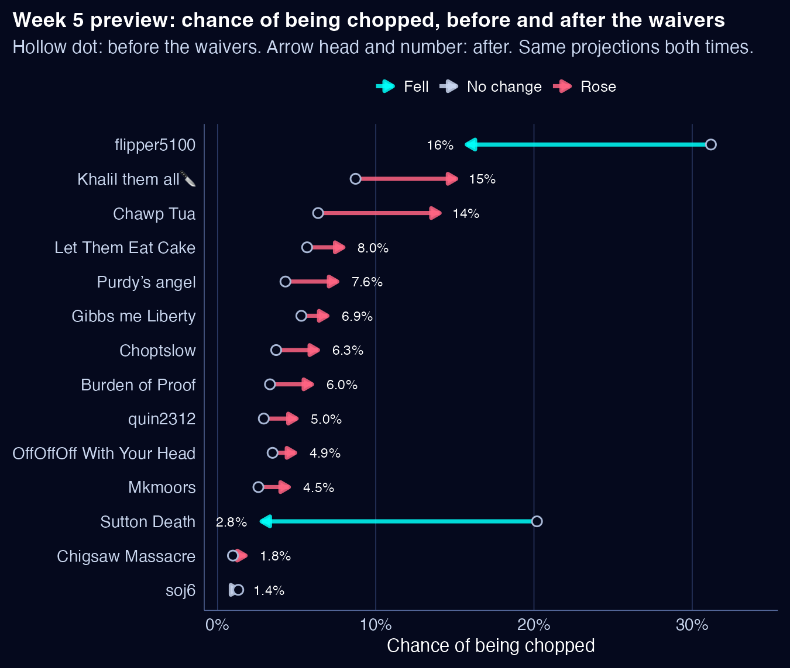
Teams most likely to be chopped
The numbers have picked a favorite. flipper5100, managed by Tony, has a 16% chance of being chopped after the waivers, down from a terrifying 31% before the waivers. Three pickups dragged the projected score from 80.5 up to 94.2, and Tyler Huntley, QB did the heavy lifting with 5.0 of it. Chuba Hubbard, RB is on a bye, and the projection has already priced that in. Tony also bid $252 on Jonathan Taylor, RB and missed by a few dollars, which is the most painful way to miss. Had that claim gone through, the chance of being chopped would have been 7.7%.
Khalil them all🔪, managed by Nicole, has a 15% chance of being chopped after the waivers, up from 8.7% before the waivers. Nicole made no pickups and the projected score sits at 94.6, exactly where it started. Nicole did bid $103 on Jonathan Taylor, RB, and lost to soj6's $283. Had that claim gone through, the chance of being chopped would have dropped to 7.0%. Participation trophy delivered.
Chawp Tua, managed by Reese, is third at 14%, up from 6.4%. This is the rare waiver run that made the projected score worse, down from 99.1 to 96.5. KC Concepcion, WR cost $12 and took 3.5 off the projection, because the player dropped to make room fit a lineup spot the new arrival does not. Add Kenneth Walker, RB on a bye and you have a masterclass in negative value. Reese also bid $143 on Jonathan Taylor, RB, which would have dropped the chance of being chopped to 3.8%.
Sutton Death takes the prize. Marissa paid $136 for Jacoby Brissett, QB and $118 for Bo Nix, QB, and the projected score leapt from 87.1 to 115.5. The chance of being chopped fell from 20% to 2.8%. That is not a waiver run. That is a rescue mission, and Marissa gets the applause.
soj6 paid the week's top price, $283 for Jonathan Taylor, RB, in a bidding war that drew 12 teams. That was 45% of the $625 Soj had left. The projected score rose by 8.3, so the wallet is lighter and the lineup is only a little heavier. OffOffOff With Your Head, managed by Whaley, paid $69 for Mike Evans, WR with 9 teams bidding. Let Them Eat Cake, managed by Winslow, paid $24 for Denzel Boston, WR, which is fine, and $20 for Travis Kelce, TE, who is on a bye this week. A true masterclass in paying full price for nothing.
Now the misses. Mkmoors, managed by McKenna, bid $275 on Jonathan Taylor, RB and lost by a whisker, which would have cut the chance of being chopped to 2.3%. Gibbs me Liberty, managed by Russ, bid $183 on the same player, which would have cut it to 3.0%. Both are now the league's best-funded spectators. The flip side of everyone else improving is that Chawp Tua and Khalil them all🔪 drifted toward the bottom without lifting a finger: from 6.4% to 14% and from 8.7% to 15%.
Time for the injury report. The statuses are as of Thursday morning, with projections refreshed that morning, so these chances can drift a little from the figures above, and the statuses can change again before kickoff. Nobody who would start is a sure thing to miss, but plenty are Questionable, and some of the swings are big. Ja'Marr Chase, WR for Khalil them all🔪 is the one to watch. Sleeper projects him for 14.4 points, so Sleeper expects him to play, and Nicole's chance of being chopped is 15%. If he sits, it jumps to 26%.
Lamar Jackson, QB is the mirror image for flipper5100. Sleeper's projection for him is 0.0 points, which means Sleeper expects him to sit. A return would cut Tony's chance of being chopped to 7.2%. Saquon Barkley, RB, Questionable for Purdy’s angel, managed by Priya, is the same story: Sleeper expects him to sit too, and the chance falls from 5.1% to 2.5% if he plays. On the other side, Sleeper expects Tee Higgins, WR for Chawp Tua to play, so a sit would lift Reese's chance from 14% to 18%, and the same goes for Jeremiyah Love, RB for Burden of Proof, managed by Fish, where it would go from 6.0% to 8.6%.
CAR and KC are on a bye. quin2312, managed by Quin, takes the full hit. Bryce Young, QB, usually projected for 17.2, and Tetairoa McMillan, WR, usually projected for 12.5, would both be in the lineup, while Xavier Worthy, WR and Darren Waller, TE would sit on the bench anyway. With the other players filling in, the projected score is an estimated 17.3 lower. Quin's chance of being chopped is still only 5.0%, so the roster can take it. Chawp Tua loses an estimated 16.0 to Kenneth Walker, RB, and flipper5100 loses Chuba Hubbard, RB.
Chance is the chance of being chopped this week. Red: twice the even split or more after the waivers. Orange: at least 1.4 times the even split. Waiver spend is what the team paid in Wednesday morning's waiver run, and Share of budget is that as a share of the waiver budget it had left going in. Bye cost is the net drop in the projected score caused by players on a bye, after other players fill the lineup. Click a heading to sort.
Team
Manager
Chance before
Chance after
Projected before
Projected after
Change
Waiver pickups
Waiver spend
Share of budget
On a bye
Bye cost
flipper5100
Tony
31%
16%
80.5
94.2
+13.7
3
$72
8%
1
5.3
Khalil them all🔪
Nicole
8.7%
15%
94.6
94.6
+0.0
0
-
-
0
-
Chawp Tua
Reese
6.4%
14%
99.1
96.5
-2.6
2
$24
3%
1
16.0
Let Them Eat Cake
Winslow
5.7%
8.0%
100.0
102.7
+2.7
2
$44
4%
1
2.0
Purdy’s angel
Priya
4.3%
7.6%
103.7
103.7
+0.0
0
-
-
0
-
Gibbs me Liberty
Russ
5.3%
6.9%
102.8
106.0
+3.3
2
$25
3%
0
-
Choptslow
Alex
3.7%
6.3%
107.9
107.9
+0.0
1
-
-
0
-
Burden of Proof
Fish
3.3%
6.0%
106.1
106.1
+0.0
2
$2
0%
1
3.9
quin2312
Quin
2.9%
5.0%
111.9
111.9
+0.0
0
-
-
4
17.3
OffOffOff With Your Head
Whaley
3.5%
4.9%
105.6
108.9
+3.3
1
$69
8%
0
-
Mkmoors
McKenna
2.6%
4.5%
112.2
112.2
+0.0
0
-
-
0
-
Sutton Death
Marissa
20%
2.8%
87.1
115.5
+28.4
2
$254
28%
1
1.1
Chigsaw Massacre
Ice
1.0%
1.8%
123.6
123.6
+0.0
0
-
-
0
-
soj6
Soj
1.3%
1.4%
116.5
124.8
+8.3
1
$283
45%
0
-
Waiver pickups
Every claim won in Wednesday morning's waiver run. Second-highest bid is the best losing bid on the player in the same run, with the manager who made it underneath. Adds to the team is the team's projected best-ball score with the player minus its score with the claim undone (the player dropped to make room comes back). A player on a bye adds nothing this week. A negative number means the player dropped to make room would have helped this week's lineup more, for example by filling a position where the team is thin.
Player
Claimed by
Price
Second-highest bid
Dropped
Projected this week
Adds to the team
Jacoby Brissett, QB (ARI)
Sutton Death(Marissa)
$136
$103(Tony)
Case Keenum
18.1
+10.8
Bo Nix, QB (DEN)
Sutton Death(Marissa)
$118
$104(Tony)
-
17.6
+10.3
Jonathan Taylor, RB (IND)
soj6(Soj)
$283
$275(McKenna)
Rico Dowdle
17.6
+8.3
Tyler Huntley, QB (BAL)
flipper5100(Tony)
$20
-
Kevin Coleman
11.5
+5.0
Will Shipley, RB (PHI)
flipper5100(Tony)
$41
$17(Russ)
Jarquez Hunter
8.7
+4.0
Mike Evans, WR (SF)
OffOffOff With Your Head(Whaley)
$69
$49(Ice)
Jonah Coleman
11.4
+3.3
Terry McLaurin, WR (WAS)
Gibbs me Liberty(Russ)
$17
$16(Alex)
Isaac TeSlaa
8.6
+2.9
Denzel Boston, WR (CLE)
Let Them Eat Cake(Winslow)
$24
$21(Tony)
Ryan Flournoy
9.1
+2.7
Keon Coleman, WR (BUF)
Chawp Tua(Reese)
$12
$12(Fish)
Marvin Mims
7.5
+0.8
Travis Kelce, TE (KC)
Let Them Eat Cake(Winslow)
$20
-
Isaiah Davis
bye
+0.0
Kimani Vidal, RB (LAC)
flipper5100(Tony)
$11
-
Ted Hurst
4.7
+0.0
Rachaad White, RB (WAS)
Gibbs me Liberty(Russ)
$8
$7(Winslow)
AJ Dillon
5.6
+0.0
Adonai Mitchell, WR (NYJ)
Burden of Proof(Fish)
$1
-
Isaiah Williams
5.1
+0.0
Dohnte Meyers, WR (CIN)
Burden of Proof(Fish)
$1
$0(Ice)
Brycen Tremayne
5.4
+0.0
Troy Franklin, WR (DEN)
Choptslow(Alex)
$0
-
Marcus Mariota
5.9
+0.0
KC Concepcion, WR (CLE)
Chawp Tua(Reese)
$12
$11(Alex)
Jaylen Wright
7.9
-3.5
Injury news
Players who would be in their fantasy team's starting lineup if healthy and who are listed for the first time this week (a player who has been out for weeks is not listed). Statuses are Sleeper's as of Thursday morning and can change before kickoff. The projections were refreshed on Thursday morning, so these chances can differ a little from the table above. Sleeper's status is the designation Sleeper lists for him. Sleeper's projection is the points Sleeper projects for him this week: 0.0 means Sleeper expects him to sit, and anything above that means it expects him to play. The tracker follows that, so the first chance is the team's chance of being chopped with him playing or sitting as Sleeper expects. The next two columns show the same chance if he plays and if he sits, with the rest of the league unchanged.
Player
Team
Sleeper's status
Sleeper's projection
Sleeper expects him to
Chance of being chopped now
If he plays
If he sits
Ja'Marr Chase, WR (CIN)
Khalil them all🔪(Nicole)
Questionable
14.4
play
15%
15%
26%
Lamar Jackson, QB (BAL)
flipper5100(Tony)
Questionable
0.0
sit
15%
7.2%
15%
Tee Higgins, WR (CIN)
Chawp Tua(Reese)
Questionable
11.0
play
14%
14%
18%
Saquon Barkley, RB (PHI)
Purdy’s angel(Priya)
Questionable
0.0
sit
5.1%
2.5%
5.1%
Jeremiyah Love, RB (ARI)
Burden of Proof(Fish)
Questionable
11.6
play
6.0%
6.0%
8.6%
Mack Hollins, WR (NE)
quin2312(Quin)
Questionable
7.2
play
5.3%
5.3%
7.6%
Kyle Monangai, RB (CHI)
Gibbs me Liberty(Russ)
Questionable
9.1
play
7.2%
7.2%
9.4%
Ladd McConkey, WR (LAC)
Gibbs me Liberty(Russ)
Questionable
6.5
play
7.2%
7.2%
7.7%
Players on a bye
Usually projected is the player's average pregame projection in the weeks he has played this season. Would be in the lineup says whether he would start if he were playing at that level. Bye cost, in the table above, is the net drop in the team's projected score once the other players fill the lineup, so it is not the sum of these projections: a player who would sit on the bench anyway adds nothing to it.
Team
Manager
Player
Usually projected
Would be in the lineup
Burden of Proof
Fish
Jalen Coker, WR (CAR)
10.9
Yes
Chawp Tua
Reese
Kenneth Walker, RB (KC)
16.0
Yes
Let Them Eat Cake
Winslow
Travis Kelce, TE (KC)
8.7
Yes
Sutton Death
Marissa
Patrick Mahomes, QB (KC)
18.7
Yes
flipper5100
Tony
Chuba Hubbard, RB (CAR)
12.4
Yes
quin2312
Quin
Bryce Young, QB (CAR)
17.2
Yes
quin2312
Quin
Tetairoa McMillan, WR (CAR)
12.5
Yes
quin2312
Quin
Xavier Worthy, WR (KC)
8.0
No
quin2312
Quin
Darren Waller, TE (CAR)
6.9
No
Season overview
The whole season so far, across every week: each chop, where every team stands and what the waivers bought. How the projections held up is under the Projection performance tab.
The chops so far
Week
Projected chop before the week
Chopped
Final
Next lowest
Gap
Chance before any game
Chance when the last games kicked off
Top pick, share of game time
1
Chawp Tua, 27%
Chop it like it’s hot
70.6
RobesPierreGarçon, 72.5
1.8
7%
47%
79%
2
Chawp Tua, 13%
Mark Andrews aka top 8 TE
87.7
Burden of Proof, 87.7
0.04
6%
2%
10%
3
quin2312, 11%
RobesPierreGarçon
71.9
Let Them Eat Cake, 89.3
17.4
11%
88%
98%
4
Khalil them all🔪, 19%
Brissett fried Rice
90.2
Mkmoors, 95.5
5.3
7%
64%
33%
Projected chop before the week is the team with the highest chance of being chopped before any game. Gap is the points between the chopped team and the next lowest. Top pick is the share of game time during which the eventual chop had the highest chance of any team.
Season scoreboard
Click a column heading to sort. Place is among the teams still alive that week, 1 being the highest score. Closest to the chop is how many points above the chopped team the team finished in its tightest week; red means 5 points or fewer. A week in danger is one where the chance of being chopped reached 25% or more (orange for one week, red for two or more). FAAB left is the waiver budget remaining out of $1,000 as of the latest build.
Team
Manager
Status
Total points
Average place
Worst week
Closest to the chop
Weeks in danger
FAAB left
quin2312
Quin
Alive
548.3
4.8
11th of 16
27.9 (week 2)
0
$703
flipper5100
Tony
Alive
519.6
7.0
12th of 17
15.4 (week 2)
1
$887
Choptslow
Alex
Alive
511.8
7.5
10th of 16
23.5 (week 2)
0
$125
Chigsaw Massacre
Ice
Alive
506.6
5.5
15th of 18
18.2 (week 1)
1
$804
OffOffOff With Your Head
Whaley
Alive
495.2
5.8
7th of 18
24.1 (week 2)
0
$844
Let Them Eat Cake
Winslow
Alive
491.8
6.5
15th of 16
17.4 (week 3)
1
$950
Purdy’s angel
Priya
Alive
484.3
8.2
14th of 18
21.5 (week 2)
0
$397
Sutton Death
Marissa
Alive
464.6
9.0
13th of 16
24.1 (week 2)
0
$655
Chawp Tua
Reese
Alive
460.7
8.8
11th of 15
20.1 (week 4)
2
$916
soj6
Soj
Alive
460.1
9.8
16th of 18
9.5 (week 2)
1
$342
Mkmoors
McKenna
Alive
458.6
8.0
14th of 15
5.3 (week 4)
1
$1000
Gibbs me Liberty
Russ
Alive
439.6
10.8
15th of 17
3.3 (week 2)
1
$885
Khalil them all🔪
Nicole
Alive
438.3
11.2
13th of 15
12.5 (week 4)
1
$880
Burden of Proof
Fish
Alive
438.3
10.8
16th of 17
0.04 (week 2)
2
$771
Brissett fried Rice
Mac
Chopped, week 4
453.7
8.5
15th of 15
34.2 (week 1)
0
-
RobesPierreGarçon
Sool
Chopped, week 3
243.1
15.3
17th of 18
1.8 (week 1)
1
-
Mark Andrews aka top 8 TE
Dave
Chopped, week 2
195.1
14.0
17th of 17
36.8 (week 1)
0
-
Chop it like it’s hot
Maddie
Chopped, week 1
70.6
18.0
18th of 18
-
0
-
Waivers
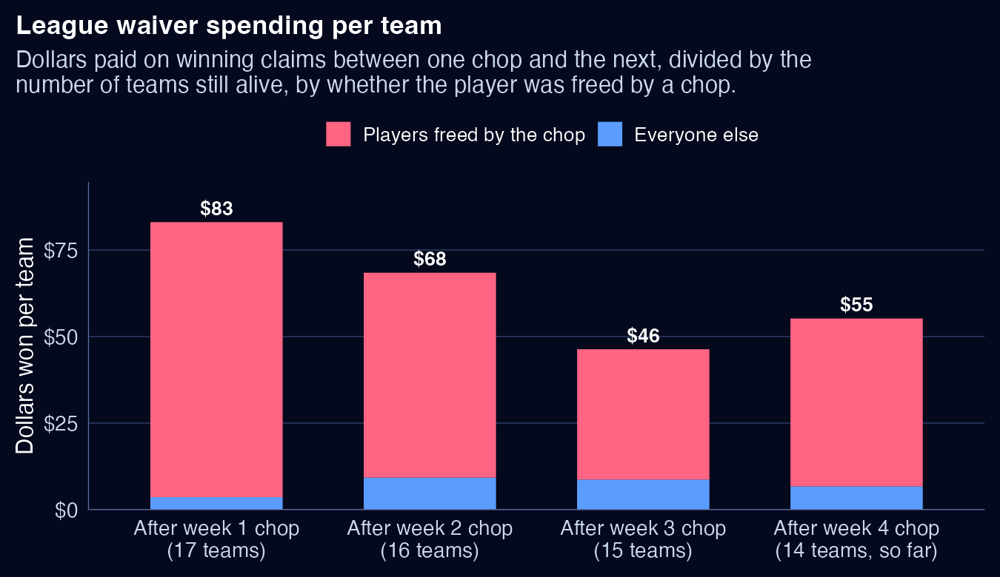
Each bar is the money won between one chop and the next (the bidding on the chopped team's players, plus the waiver runs that follow during the week's games), divided by the number of teams still alive. The last bar is still open.
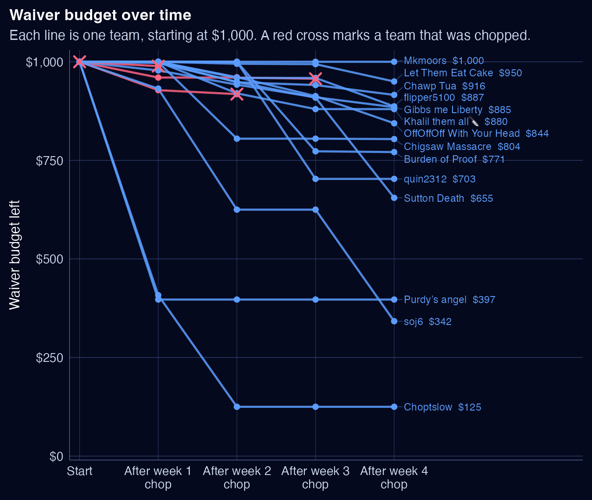
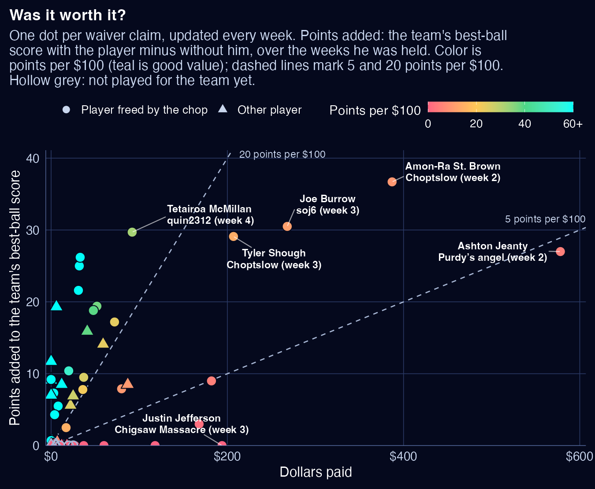
Was it worth it?
Click or tap any dot to see the player, the team he went to, the week he was picked up, what he cost, his points per $100, the total points he has added and his average per game. Each dot is one waiver claim, with dollars paid across and points added up the side; the color is points per $100 (teal is good value) and the dashed lines mark 5 and 20 points per $100. Hollow dots have not played for the team yet. Pick a team from the menu to see only its claims.
Points per $1000204060+
Has played for the teamNot played yet
Click or tap a dot for the details.
This figure updates every week. Dots move up as the players keep scoring for their new teams, and hollow dots fill in once the players have played. Click or tap a dot for the details, or pick a team to see only its claims.
Reading the figure
Everything below is in points per $100: the points a claim has added, divided by its price, times 100. The dashed lines on the figure are 5 and 20. Points are totals over every week the player has been held, so claims from earlier weeks have had more games to add points. The week is the week the player was picked up.
Best value (claims of $10 or more): Sam Darnold, soj6 (week 3): 79.4 points per $100; Kyle Monangai, Gibbs me Liberty (week 4): 78.1 points per $100; Jameis Winston, Gibbs me Liberty (week 3): 70.8 points per $100
Big spenders ($100 or more) that paid off: Tyler Shough, Choptslow (week 3): 14.1 points per $100; Joe Burrow, soj6 (week 3): 11.4 points per $100
Big spenders that did not: Justin Jefferson, Chigsaw Massacre (week 3): 0.0 points per $100; George Pickens, quin2312 (week 4): 0.0 points per $100
Not played for the team yet: 27 claims worth $841 in all, the largest being Jonathan Taylor, soj6 ($283); Jacoby Brissett, Sutton Death ($136); Bo Nix, Sutton Death ($118).
Manager habits
Biggest spender: Choptslow (Alex) has spent $875 of $1,000 and has $125 left.
Most active: Burden of Proof (Fish) has placed 33 claims and won 7.
Hit rate (teams with five or more claims): quin2312 (Quin) has won 4 of 6 (67%); Let Them Eat Cake (Winslow) has won 5 of 30 (17%).
Most money left on the table: Purdy’s angel (Priya), who paid $316 more than the runner-up bid across 1 contested win.
Most near misses: Choptslow (Alex) has lost 4 bids by $5 or 5% of the winning price or less.
Waiver return on investment, by manager
Points added by a claim is the team's best-ball score with the player minus the score without him, summed over the weeks he was on the roster after the claim; the next best player on the roster takes his spot in the second score. Points per $100 divides that by the money paid on claims whose player has played. Claims for a player who has not played yet add nothing so far and are left out of points per $100. Worst claim is the lowest return per dollar among claims of $10 or more whose player has played. Click a heading to sort.
Team
Manager
Claims
FAAB spent
Points added
Points per $100
Best claim
Worst claim
Choptslow
Alex
9
$875
94.9
10.8
Amon-Ra St. Brown, +36.7
Colston Loveland, $168 for +3.0
soj6
Soj
6
$658
76.0
20.3
Joe Burrow, +30.5
Kyle Pitts, $60 for +0.0
quin2312
Quin
4
$297
47.4
16.0
Tetairoa McMillan, +29.7
George Pickens, $118 for +0.0
Gibbs me Liberty
Russ
7
$115
39.1
43.4
Kyle Monangai, +25.0
AJ Dillon, $17 for +0.0
OffOffOff With Your Head
Whaley
5
$156
34.9
40.1
Harold Fannin, +21.6
Jalon Daniels, $12 for +0.0
Purdy’s angel
Priya
2
$603
33.9
5.6
Ashton Jeanty, +27.0
-
Chawp Tua
Reese
6
$84
29.0
49.2
Jameson Williams, +19.4
-
Sutton Death
Marissa
7
$345
26.1
28.7
Quinshon Judkins, +18.8
Jake Ferguson, $37 for +0.0
RobesPierreGarçon
Sool
3
$82
21.5
28.3
Drew Lock, +17.2
-
Burden of Proof
Fish
7
$229
20.7
9.1
Isaiah Williams, +11.7
AJ Barner, $27 for +0.0
flipper5100
Tony
6
$113
15.9
38.8
Michael Penix, +15.9
-
Brissett fried Rice
Mac
5
$43
11.3
49.1
Terry McLaurin, +10.4
-
Khalil them all🔪
Nicole
8
$120
7.9
9.3
Mark Andrews, +7.9
-
Chigsaw Massacre
Ice
7
$196
7.6
3.9
Greg Dulcich, +7.0
Justin Jefferson, $194 for +0.0
Let Them Eat Cake
Winslow
5
$50
0.0
0.0
-
-
Mark Andrews aka top 8 TE
Dave
3
$11
0.0
0.0
-
-
Mkmoors
McKenna
1
$0
0.0
-
-
-
Projection performance
How the tracker's pregame projections and its chance of being chopped held up, week by week, and how the Approximate tab compares with the Simulations tab. These are about the tracker itself; the teams and managers are under Season overview.
All 4 weeks side by side
Top row: how much of each week's scoring had happened (each team's share of its own final points, with the middle of the league shaded); little moves before Sunday. Middle row: the chance given to the chopped team (red) and its projected final score (teal); the two mirror each other. Bottom row: where the tracker ranked the chopped team by chance, 1 being its top pick.
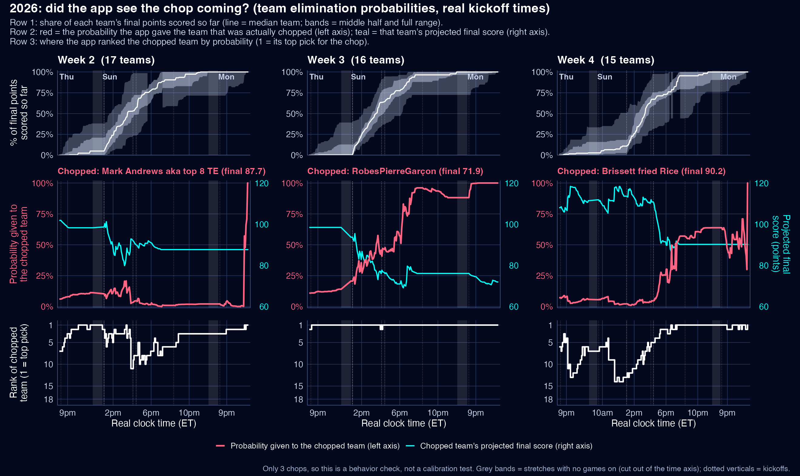
All 4 weeks together, one column per week.
The two lowest teams each week
For each week, the chopped team and the one that came closest to it. The ranges narrow as games finish and the projection settles on the final score.
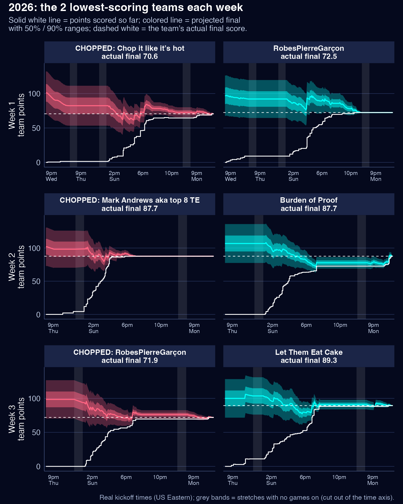
The two lowest finishers, all 4 weeks. White line: points so far. Colored line: projected final with 50% and 90% ranges (red: the chopped team). Dashed line: the actual final.
A cross-check: does the Simulations tab agree?
Everything above uses the Approximate tab, because it can be recomputed every five minutes of a week. The Simulations tab works differently. It plays out 5,000 whole weeks, draws each player's score from real, skewed outcomes, and re-picks every team's best lineup in each one, so a bench player who booms can step in. That is too slow to run at every step, so the two tabs are compared at seven moments per week: before the first game, five evenly spaced moments, and the kickoff of the week's last games.
Average gap
0.9 points
Biggest gap
12.9 points
Same top pick
26 of 28 moments
Correlation
0.99
Across 462 team-and-moment pairs the average gap is 0.9 percentage points, and the two tabs name the same most likely chop at 26 of the 28 moments.
The largest gap was in week 3 on Sunday at 4:37pm, when RobesPierreGarçon stood at 44% on the Approximate tab and 57% on the Simulations tab.
For teams the Approximate tab put between 10% and 70%, the Simulations tab averaged 2.0 points higher, and gave teams under 10% 0.2 points less. That comes from only 45 team-moments in the middle band, so treat it as a lead and not a finding.
At 2 of the 28 moments the two tabs had a different top pick. Week 1, Monday at 8:06pm: the Approximate tab's top pick was RobesPierreGarçon at 53% and the Simulations tab's was Chop it like it’s hot at 52%. Week 4, Sunday at 6:37pm: the Approximate tab's top pick was Brissett fried Rice at 30% and the Simulations tab's was Mkmoors at 31%.
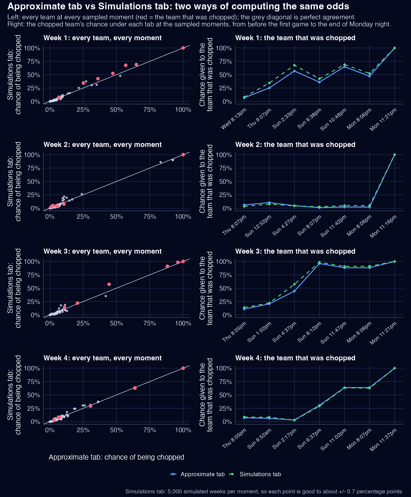
Approximate tab against Simulations tab, weeks 1 to 4. Left: each dot is one team at one sampled moment (red: the chopped team); the diagonal is perfect agreement. Right: the chopped team's chance under each tab at those moments. Each Simulations value comes from 5,000 simulated weeks, good to about 0.7 points.
How this was made
Each week is rebuilt from nflverse play-by-play, whose time stamps give every game its real clock, together with Sleeper's archived pregame projections and the league's scoring rules. At every five minutes while games were on, the tracker's own math is run on the state of the league at that moment. The model shown is the Approximate tab. A few players each week score differently in the play-by-play than in Sleeper's feed. The live tracker uses Sleeper's numbers directly, so this only touches the replays.
Updated October 08, 2026. Data: nflverse play-by-play and Sleeper projections.